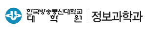
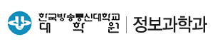
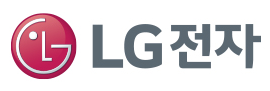
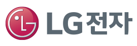
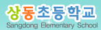
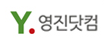
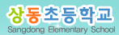
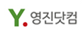

누군가의 그림자가 해시계 위에 살포시 놓이고,
들판에 풀린 바람을 쫓아 하염없이 마음이 달려가는
가을은 꿈꾸는 계절입니다.
우리의 꿈을 이루어주는 소프트웨어를
어린 아이들에게 소개해 주며
함께 다시 젊은 마음으로 꿈꾸고 싶은 사람들이 모였습니다.
10월 22일 전국의 도서관에서 열리게 될
자원봉사자들의 소프트웨어 강연을 준비합니다.
“10월, 소프트웨어에 물들다.” 강연 프로젝트에 많은 관심과 참여, 그리고 응원을 부탁드립니다.
누구나 참여하여 자신의 재능으로 도움을 주실 수 있습니다.
10월의 높은 하늘 아래, 상쾌한 가을 바람을 맞으며 가까운 동네 도서관으로 우리들의 마음이 달려갑니다.


 

 

 


